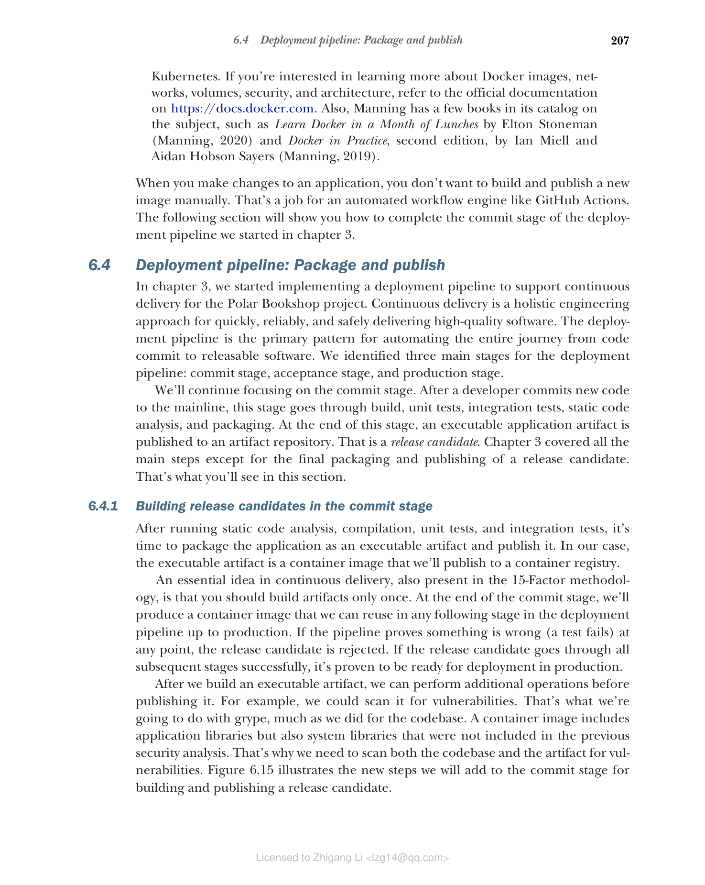
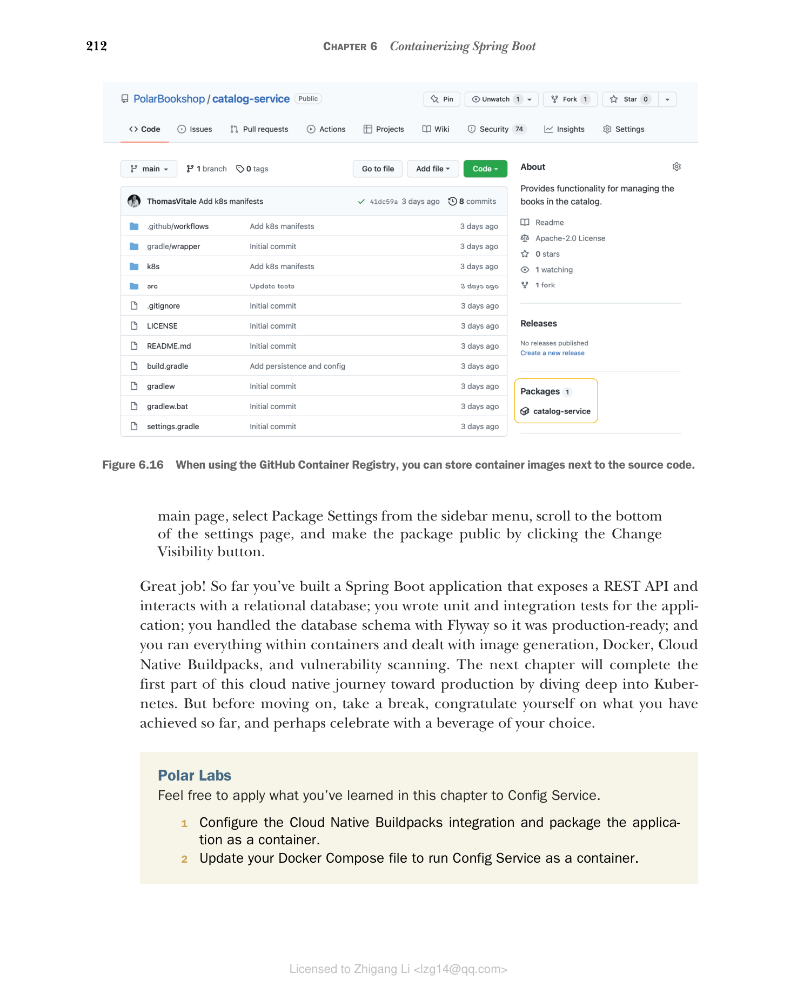

6.4 部署流水线：打包和发布
在第 3 章中，我们开始实现部署流水线以支持 Polar Bookshop 项目的持续交付。持续交付是一种整体工程方法，用于快速、可靠、安全地交付高质量软件。部署流水线是自动化从代码提交到可发布软件整个过程的主要模式。我们确定了部署流水线的三个主要阶段：提交阶段、验收阶段和生产阶段。
我们将继续关注提交阶段。在开发人员向主线提交新代码后，此阶段经过构建、单元测试、集成测试、静态代码分析和打包。在此阶段结束时，一个可执行的应用程序工件被发布到工件仓库。这就是发布候选。第 3 章涵盖了所有主要步骤，除了发布候选的最终打包和发布。这就是您在本节中将看到的内容。
6.4.1 在提交阶段构建发布候选
运行静态代码分析、编译、单元测试和集成测试后，是时候将应用程序打包为可执行工件并发布了。在我们的例子中，可执行工件是容器镜像，我们将发布到容器注册表。
持续交付中的一个重要思想（也体现在 15-Factor 方法论中）是您应该只构建一次工件。在提交阶段结束时，我们将生成一个容器镜像，可以在部署流水线的任何后续阶段中重用，直到生产环境。如果管道在任何阶段发现问题（测试失败），则拒绝该发布候选。如果发布候选成功通过所有后续阶段，则证明它已准备好在生产环境中部署。
构建可执行工件后，我们可以在发布之前执行额外的操作。例如，我们可以扫描它是否存在漏洞。这就是我们将使用 grype 所做的，就像我们对代码库所做的那样。容器镜像包括应用程序库，但也包括之前安全分析中未包含的系统库。这就是为什么我们需要同时扫描代码库和工件以查找漏洞。图 6.15 说明了我们将为构建和发布发布候选而添加到提交阶段的新步骤。

图 6.15 在提交阶段结束时，发布候选被发布到工件仓库。在这种情况下，容器镜像被发布到容器注册表。一旦发布候选被发布，多方可以下载并使用它，包括部署流水线中的下一阶段。我们如何确保所有相关方使用的是来自 Polar Bookshop 项目的合法容器镜像，而不是被篡改的镜像？我们可以通过签名镜像来实现。在发布步骤之后，我们可以添加一个新步骤来签名发布候选。例如，我们可以使用 Sigstore（www.sigstore.dev），这是一个提供开源工具用于签名、验证和保护软件完整性的非营利服务。如果您对这个主题感兴趣，我推荐访问该项目网站。
在下一节中，我将向您展示如何在我们的部署流水线的提交阶段中实现这些新步骤。
6.4.2 使用 GitHub Actions 发布容器镜像
GitHub Actions 是一个引擎，您可以直接从 GitHub 仓库自动化软件工作流。工作流定义通常存储在 GitHub 仓库根目录的 .github/workflows 目录中。
在第 3 章中，我们开始为 Catalog Service 开发实现部署流水线提交阶段的工作流。现在让我们继续实现，添加更多步骤来打包和发布应用程序。
从您的 Catalog Service 项目（catalog-service），打开提交阶段的工作流定义（.github/workflows/commit-stage.yml），定义一些环境变量来存储构建应用程序容器镜像所需的关键信息。通过使用环境变量，您可以轻松更改使用的容器注册表或发布工件的版本。请记住在以下代码清单中用全小写的 GitHub 用户名替换占位符。第 15 章将涵盖软件发布策略，但在那之前，我们将用 latest 而不是版本号来标记每个镜像。
代码清单 6.9 配置发布候选的信息
name: Commit Stage
on: push
env:
# 使用 GitHub Container Registry
REGISTRY: ghcr.io
# 镜像名称。请记住添加您的 GitHub 用户名，全小写。
IMAGE_NAME: <your_github_username>/catalog-service
# 目前，任何新镜像都将标记为 "latest"。
VERSION: latest
jobs:
...
接下来，让我们向工作流添加一个新的 "Package and Publish" 作业。如果 "Build and Test" 作业成功完成，并且工作流在 main 分支上运行，则新作业将被执行。我们将使用与本地打包 Catalog Service 为容器镜像相同的策略，依赖 Spring Boot Gradle 插件提供的 Buildpacks 集成。请注意，我们不会直接推送镜像。这是因为我们首先想扫描镜像是否存在漏洞，稍后我们将进行此操作。现在，按如下方式更新 commit-stage.yml 文件。
代码清单 6.10 使用 Buildpacks 将应用程序打包为 OCI 镜像
name: Commit Stage
on: push
env:
REGISTRY: ghcr.io
IMAGE_NAME: <your_github_username>/catalog-service
VERSION: latest
jobs:
build:
...
package:
# 作业的唯一标识符
name: Package and Publish
# 仅在 "build" 作业成功完成时运行
needs: [ build ]
# 仅在 main 分支上运行
if: ${{ github.ref == 'refs/heads/main' }}
# 在 Ubuntu 22.04 机器上运行
runs-on: ubuntu-22.04
permissions:
# 检出当前 Git 仓库的权限
contents: read
# 向 GitHub Container Registry 上传镜像的权限
packages: write
# 向 GitHub 提交安全事件的权限
security-events: write
steps:
- name: Checkout source code
# 检出当前 Git 仓库 (catalog-service)
uses: actions/checkout@v3
- name: Set up JDK
# 安装并配置 Java 运行时
uses: actions/setup-java@v3
with:
distribution: temurin
java-version: 17
cache: gradle
- name: Build container image
run: |
chmod +x gradlew
# 依赖 Spring Boot 中的 Buildpacks 集成构建容器镜像，并定义发布候选的名称
./gradlew bootBuildImage \
--imageName ${{ env.REGISTRY }}/${{ env.IMAGE_NAME }}:${{ env.VERSION }}
将应用程序打包为容器镜像后，让我们更新 commit-stage.yml 文件以使用 grype 扫描镜像中的漏洞并将报告发布到 GitHub，类似于我们在第 3 章中所做的。最后，我们可以通过容器注册表进行身份验证并推送代表我们发布候选的镜像。
代码清单 6.11 扫描镜像中的漏洞并发布
name: Commit Stage
on: push
env:
REGISTRY: ghcr.io
IMAGE_NAME: polarbookshop/catalog-service
VERSION: latest
jobs:
build:
...
package:
...
steps:
- name: Checkout source code
...
- name: Set up JDK
...
- name: Build container image
...
# 使用 grype 扫描发布候选镜像中的漏洞
- name: OCI image vulnerability scanning
uses: anchore/scan-action@v3
id: scan
with:
# 要扫描的镜像是发布候选
image: ${{ env.REGISTRY }}/${{ env.IMAGE_NAME }}:${{ env.VERSION }}
# 如果在镜像中发现漏洞，不会使构建失败
fail-build: false
severity-cutoff: high
acs-report-enable: true
# 将安全漏洞报告上传到 GitHub（SARIF 格式）
- name: Upload vulnerability report
uses: github/codeql-action/upload-sarif@v2
if: success() || failure()
with:
sarif_file: ${{ steps.scan.outputs.sarif }}
# 通过 GitHub Container Registry 进行身份验证
- name: Log into container registry
uses: docker/login-action@v2
with:
# 之前在环境变量中定义的注册表值
registry: ${{ env.REGISTRY }}
# GitHub Actions 提供的当前用户的 GitHub 用户名
username: ${{ github.actor }}
# GitHub Actions 提供的与注册表进行身份验证所需的令牌
password: ${{ secrets.GITHUB_TOKEN }}
- name: Publish container image
# 将发布候选推送到注册表
run: docker push ${{ env.REGISTRY }}/${{ env.IMAGE_NAME }}:${{ env.VERSION }}
在代码清单 6.11 中，如果发现严重漏洞，我们不会使工作流失败。但是，您可以在 catalog-service GitHub 仓库的 Security 部分找到扫描结果。在撰写本文时，Catalog Service 项目中没有发现高危或严重漏洞，但未来可能会有所不同。如第 3 章中已经提到的，在真实场景中，我建议您根据公司的供应链安全政策仔细配置和调整 grype，并在结果不合规时使工作流失败（将 fail-build 属性设置为 true）。有关更多信息，请参阅官方 grype 文档（https://github.com/anchore/grype）。
完成部署流水线的提交阶段后，确保您的 catalog-service GitHub 仓库是公开的。然后将您的更改推送到远程仓库的 main 分支，并在 Actions 标签页中查看工作流执行结果。
警告：上传漏洞报告的操作要求 GitHub 仓库是公开的。它仅在企业订阅下适用于私有仓库。如果您希望保持仓库私有，则需要跳过"Upload vulnerability report"步骤。在整本书中，我假设您为 Polar Bookshop 项目在 GitHub 上创建的所有仓库都是公开的。
从 GitHub Actions 发布并以仓库名命名的镜像会自动关联。工作流完成执行后，您将在 GitHub catalog-service 仓库主页侧边栏中找到 Packages 部分，其中有一个 "catalog-service" 条目（图 6.16）。点击该条目，您将被引导到 Catalog Service 的容器镜像仓库。

图 6.16 使用 GitHub Container Registry 时，您可以在源代码旁边存储容器镜像。注意：发布到 GitHub Container Registry 的镜像将具有与相关 GitHub 代码仓库相同的可见性。如果没有仓库与镜像关联，则默认是私有的。在整本书中，我假设您为 Polar Bookshop 构建的所有镜像都可以通过 GitHub Container Registry 公开访问。如果不是这样，您可以转到包的主页，从侧边栏菜单选择 Package Settings，滚动到设置页面底部，点击 Change Visibility 按钮将包设为公开。
做得好！到目前为止，您已经构建了一个暴露 REST API 并与关系型数据库交互的 Spring Boot 应用程序；为应用程序编写了单元测试和集成测试；使用 Flyway 管理数据库模式使其达到生产就绪状态；并且在容器中运行了所有内容，并处理了镜像生成、Docker、Cloud Native Buildpacks 和漏洞扫描。下一章将通过深入了解 Kubernetes 来完成这段云原生生产之旅的第一部分。但在继续之前，休息一下，为自己迄今为止取得的成就感到自豪，也许可以用您喜欢的饮料庆祝一下。
Polar Labs
欢迎将您在本章中学到的知识应用到 Config Service。
- 配置 Cloud Native Buildpacks 集成并将应用程序打包为容器。
- 更新您的 Docker Compose 文件以将 Config Service 作为容器运行。
- 通过 SPRING_CLOUD_CONFIG_URI 环境变量配置 Catalog Service 以使用 Config Service URL，依赖 Docker 内置 DNS。
- 使用 GitHub Actions 实现提交阶段工作流，为 Config Service 启动部署流水线。
您可以参考本书附带代码仓库中的 Chapter06/06-end 文件夹查看最终结果（https://github.com/ThomasVitale/cloud-native-spring-in-action）。